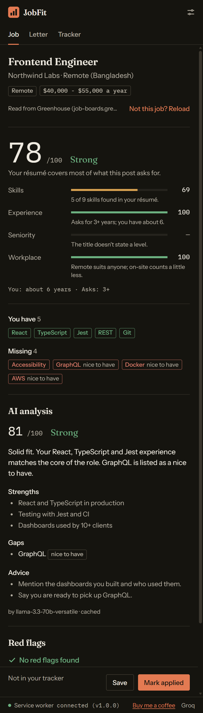
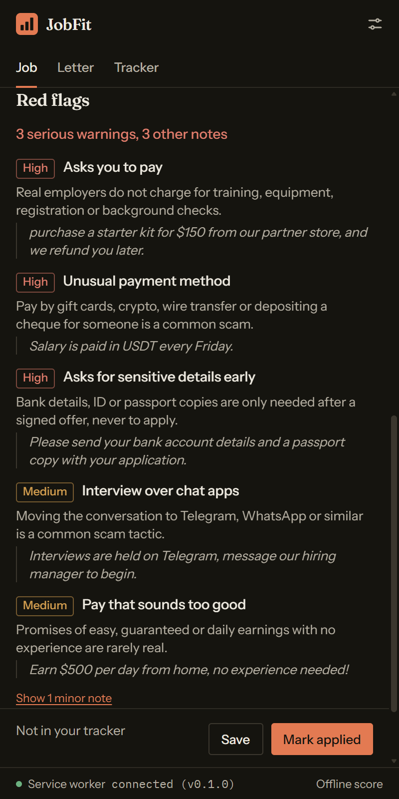
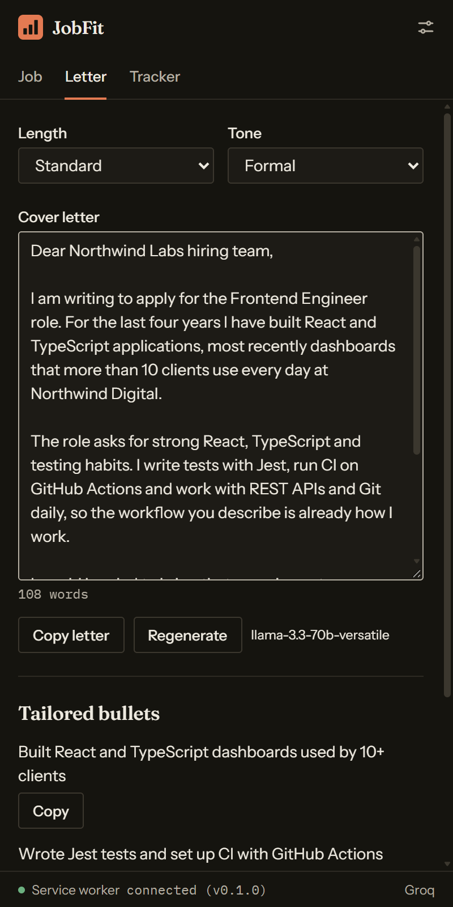
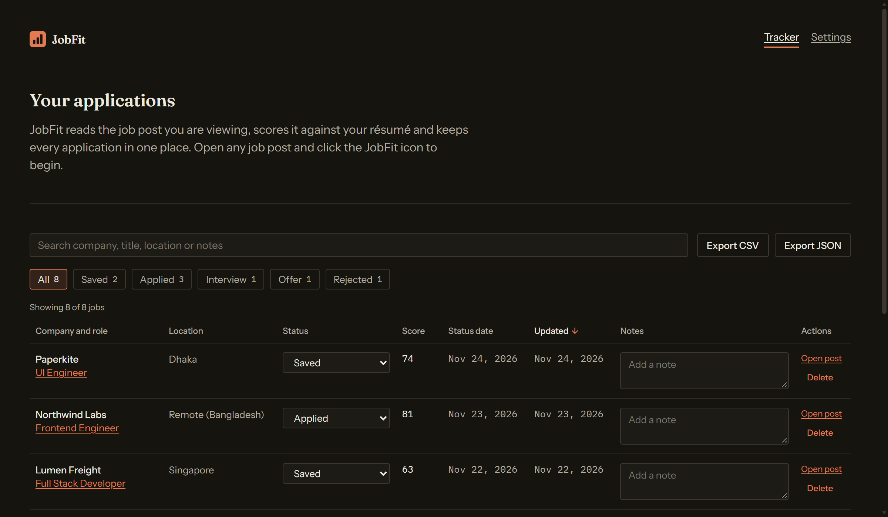

A score you can check
Skills, years of experience, seniority and workplace are compared with your résumé on your device, with no AI needed. You see which skills you have and which the post asks for that you do not show.
JobFit reads the job post you are looking at and shows a match score, the skills you are missing, red flags, and a cover letter written from your own résumé. It lives in your browser's side panel.
Download JobFit (zip) How to installFree. No account. Works in Chrome, Edge and other Chromium browsers.
Skills, years of experience, seniority and workplace are compared with your résumé on your device, with no AI needed. You see which skills you have and which the post asks for that you do not show.

Payment requests, sensitive details asked for up front, interviews over chat apps. JobFit flags what it found and why it matters, before you hand anything over.

Use a free key from Groq, Google AI Studio or OpenRouter to write a cover letter and tailored résumé bullets. It only uses what is in your résumé, and anything it made up is flagged for you to check.

Save posts, move them from saved to applied, interview and offer, add notes, and export to CSV or JSON. Everything stays in your browser.

chrome://extensions and turn on Developer mode.Works on LinkedIn Jobs, Indeed, Greenhouse, Lever and Workday, and on any other page through the side panel.
Your résumé, keys, settings and tracker are stored in your browser on your device. There is no JobFit server and no account. Job text is sent only to the AI provider you choose, only when you ask for an AI feature. With no provider selected, nothing leaves your computer.